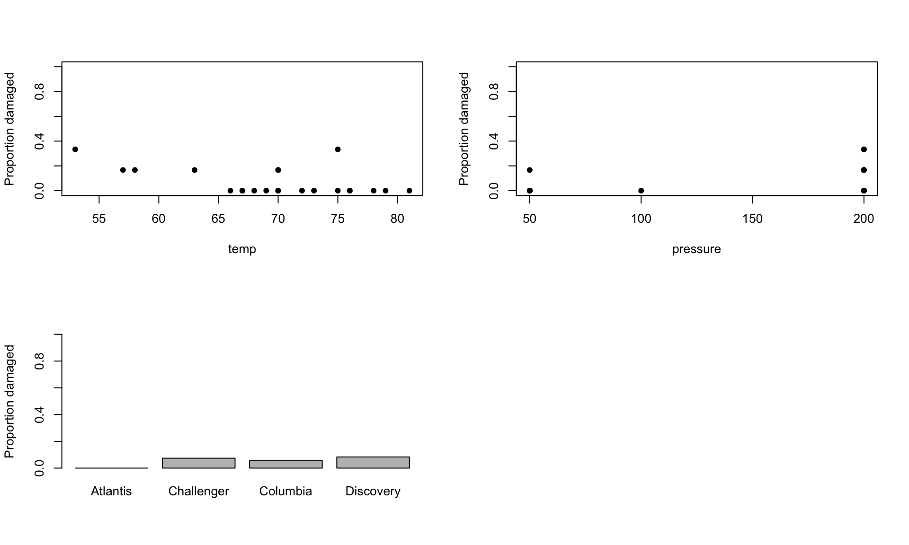
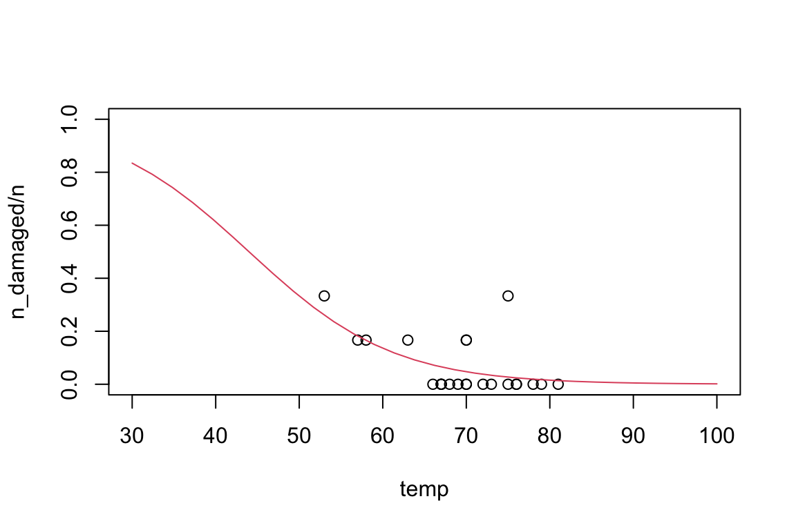

This data set concerns the 23 space shuttle flights before the Challenger disaster. The disaster is thought to have been caused by the failure of a number of O-rings, of which there were six in total. The data consist of four variables, the number of damaged O-rings for each pre-Challenger flight (n_damaged), together with the launch temperature in degrees Fahrenheit (temp), the pressure at which the pre-launch test of O-ring leakage was carried out (pressure) and the name of the orbiter (orbiter).
The Challenger launch temperature on 20th January 1986 was 31F. By fitting generalised linear models to this data, we will predict the probability of O-ring damage at the Challenger launch.
We need to add a column n to the data for the total number of O-rings on each shuttle, which should be \(6\) in all cases.
# Add a column to the data for the total number of O-rings on each shuttle.shuttle$n <-rep(6, nrow(shuttle))
Make three plots, of the proportion of O-rings which were damaged against temp, pressure and orbiter.
# Make plots of proportion of O-rings damaged against `temp`, `pressure` and `orbiter`.par(mfrow =c(2, 2))plot(n_damaged / n ~ temp, data = shuttle, pch =16, ylim =c(0, 1), ylab ="Proportion damaged")plot(n_damaged / n ~ pressure, data = shuttle, pch =16, ylim =c(0, 1), ylab ="Proportion damaged")shuttle_props <-aggregate(n_damaged / n ~ orbiter, data = shuttle, FUN = mean)barplot(shuttle_props$`n_damaged/n`, names.arg = shuttle_props$orbiter, ylim =c(0, 1), ylab ="Proportion damaged")par(mfrow =c(1, 2))

Here orbiter is a factor, and temp and pressure are continuous covariates, and your plots should be appropriate to the type of explanatory variable. Which of these explanatory variables do you think will be important for predicting the proportion of damaged O-rings?
Fitting a GLM and model selection
We first find the best model. We can fit a logistic regression model for the proportion of damaged O-rings against temp, pressure and orbiter.
# Fit a logistic regression of proportion of damaged O-rings against `temp`, `pressure` and `orbiter`.shuttle_glm1 <-glm((n_damaged / n) ~ temp + pressure + orbiter, data = shuttle, family = binomial, weights = n)
We can check the summary to find estimates of the parameters, and to conduct hypothesis tests about whether each individual parameter is needed in the model.
summary(shuttle_glm1)
Call:
glm(formula = (n_damaged/n) ~ temp + pressure + orbiter, family = binomial,
data = shuttle, weights = n)
Coefficients:
Estimate Std. Error z value Pr(>|z|)
(Intercept) -1.395e+01 3.282e+03 -0.004 0.9966
temp -9.560e-02 4.752e-02 -2.012 0.0442 *
pressure 8.370e-03 8.068e-03 1.037 0.2996
orbiterChallenger 1.660e+01 3.282e+03 0.005 0.9960
orbiterColumbia 1.629e+01 3.282e+03 0.005 0.9960
orbiterDiscovery 1.610e+01 3.282e+03 0.005 0.9961
---
Signif. codes: 0 '***' 0.001 '**' 0.01 '*' 0.05 '.' 0.1 ' ' 1
(Dispersion parameter for binomial family taken to be 1)
Null deviance: 24.230 on 22 degrees of freedom
Residual deviance: 15.795 on 17 degrees of freedom
AIC: 41.355
Number of Fisher Scoring iterations: 17
We can also use anova with the test = "LRT" argument to conduct a log-likelihood ratio test of whether each explanatory variable is needed in the model:
# Conduct likelihood ratio tests for the presence of each explanatory variable.anova(shuttle_glm1, test ="LRT")
What do you conclude about which explanatory variables you should keep in the model?
We could fit a logistic regression on temp alone with
# Fit a logistic regression on `temp`.shuttle_glm2 <-glm((n_damaged / n) ~ temp, data = shuttle, family = binomial, weights = n)summary(shuttle_glm2)
Call:
glm(formula = (n_damaged/n) ~ temp, family = binomial, data = shuttle,
weights = n)
Coefficients:
Estimate Std. Error z value Pr(>|z|)
(Intercept) 5.08498 3.05247 1.666 0.0957 .
temp -0.11560 0.04702 -2.458 0.0140 *
---
Signif. codes: 0 '***' 0.001 '**' 0.01 '*' 0.05 '.' 0.1 ' ' 1
(Dispersion parameter for binomial family taken to be 1)
Null deviance: 24.230 on 22 degrees of freedom
Residual deviance: 18.086 on 21 degrees of freedom
AIC: 35.647
Number of Fisher Scoring iterations: 5
We might also consider whether there might be a higher-order polynomial dependence of the linear predictor on temp, rather than the linear dependence in shuttle_glm2. For example, we could fit a model with a linear predictor which is quadratic in temp.
# Fit a logistic regression with an linear predictor which is quadratic in `temp`.shuttle_glm3 <-glm((n_damaged / n) ~ temp +I(temp^2), data = shuttle, family = binomial, weights = n)
Do you prefer shuttle_glm2 or shuttle_glm3?
summary(shuttle_glm3)
Call:
glm(formula = (n_damaged/n) ~ temp + I(temp^2), family = binomial,
data = shuttle, weights = n)
Coefficients:
Estimate Std. Error z value Pr(>|z|)
(Intercept) 22.126148 23.794426 0.930 0.352
temp -0.650885 0.740756 -0.879 0.380
I(temp^2) 0.004141 0.005692 0.727 0.467
(Dispersion parameter for binomial family taken to be 1)
Null deviance: 24.230 on 22 degrees of freedom
Residual deviance: 17.592 on 20 degrees of freedom
AIC: 37.152
Number of Fisher Scoring iterations: 5
Prediction
We would like to use our preferred model to predict the probability of O-ring damage at 31F.
# Predict the probability of O-ring failure at 31F.newdata <-data.frame(temp =31)pred_glm2 <-predict(shuttle_glm2, newdata = newdata, type ="response", se.fit =TRUE)pred_glm2
# The predicted probability of O-ring failure at 31F is 0.82.
We have the predictions and their standard errors, so we can obtain an asymptotic 95% confidence interval.
# Find a asymptotic 95% confindence interval for the probability of O-ring failure at 31F.CI <-c(pred_glm2$fit -qnorm(0.975) * pred_glm2$se.fit, pred_glm2$fit +qnorm(0.975) * pred_glm2$se.fit)CI
1 1
0.346496 1.289053
What do you notice about the interval obtained?
Try re-running this code to find a prediction and confidence interval without type = "response". This does the prediction on the scale of the linear predictor. Can you work out how to back-transform the prediction and confidence interval to the scale of the data? Is the prediction the same as before? Is the confidence interval the same as before?
Can you modify the code from Computer Lab 05 to add a curve giving the predicted probability of O-ring damage at each temp to your plot of proportion of damaged O-rings against temp? Extend the x-axis beyond the range of the original data, to between 30F and 100F. The resulting plot should look like the following

All of these predictions should be treated with extreme caution, as we are extrapolating far outside the range of the observed data. However, in the presence of such high uncertainty, it may have been unwise to launch at such a low temperature.